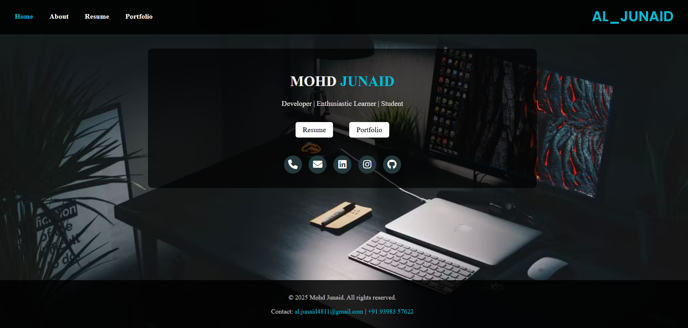

My Projects

Portfolio Website
This project showcases my personal portfolio built using HTML, CSS, and JavaScript. It includes sections like About, Resume, and Projects with a responsive design.
🦠 COVID-19 Real-Time Data Dashboard
COVID-19 Real-Time Data Dashboard is a Python-based project that collects, processes, and visualizes global COVID-19 data in both static reports (CSV, Excel, PDF) and an interactive web dashboard (Streamlit).
- 📡 Live Data Fetching – Retrieves real-time COVID-19 statistics via public APIs.
- 🧹 Data Cleaning & Preprocessing – Handles missing values and extracts key metrics.
- 📊 Analysis – Calculates recovery rate, fatality rate, and country-wise comparisons.
- 📈 Visualization – Generates line charts, bar charts, and PDF dashboards with Matplotlib.
- 🌐 Interactive Dashboard – Built with Streamlit for country-wise stats and top 10 comparisons.
- 📑 Reports Export – Save results as CSV, Excel, or PDF for offline use.
Typing Speed App
A Python-based app that calculates words per minute and accuracy while the user types dynamically.
Automation Script
A utility script that organizes files by type and automates renaming and email filtering tasks using Python.